|
Lange tijd is de
herkomst van de Nederlandse Monopoly straatnamen in
raadselen gehuld geweest en er is zelfs in 2006 door het
NRC een serie artikelen aan
gewijd waarin men opriep met verklaringen te komen. Het
is echter aantoonbaar dat de keuze van juist dié steden
en straatnamen voor een belangrijk deel kan worden
gekoppeld aan het warenhuis Perry, de eerste importeur
en distributeur van de Monopoly spellen in Nederland.
Van 1936 tot 1940 werden Engelse spellen met straatnamen
van London geïmporteerd die door Perry werden voorzien
van Nederlandse vertalingen van de spelregels. In 1940
werd door Perry de eerste volledig Nederlandse versie,
met Nederlandse steden en straatnamen uitgebracht. De
licentie was in handen van Van Perlstein & Roeper Bosch
N.V. (v.P.&R.B.N.V.).
In 2009 deed ik hiernaar
onderzoek en het blijkt dat de steden (met uitzondering
van “Ons Dorp”) overeenkomen met alle plaatsen waar
Perry een filiaal of magazijn had. De meeste daarvan
lagen in de straten die op het Monopoly bord worden
genoemd. Waarom de overige straten in diezelfde steden
er op staan kan vaak volgens een terugkerend patroon
beredeneerd worden.
Hieronder een opsomming
met de verklaring voor de diverse steden en straten (de
straten met een directe of indirecte relatie met Perry
zijn
rood gemarkeerd):
KETELSTRAAT 35:
Perry filiaal te Arnhem. Tegenwoordig zit Perry Sport
nog steeds aan de Ketelstraat 23.
STEENSTRAAT en
VELPERPLEIN: de
Ketelstraat gaat via de Roggestraat over in het
Velperplein, die op zijn beurt weer overgaat in de
Steenstraat. De groep straten vormt dus een logisch
geheel. Het Velperplein was in de jaren ‘30 en ‘40 de
belangrijkste winkelomgeving in het centrum van Arnhem.
Daar Perry zelf een warenhuis was, was de keuze voor
winkelstraten een voor de hand liggende. Ook in de
andere kleurgroepen komt dit regelmatig terug.
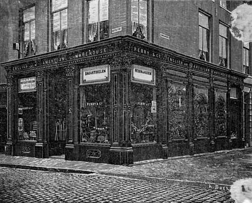
Perry
filiaal in de Ketelstraat te Arnhem, 1903
BARTELJORISSTRAAT 20:
Perry Magazijn H.M.F. Seveke, magazijn van Perry-artikelen te Haarlem.
(KLEINE) HOUTSTRAAT 84:
Rijwielhandelaar J. Perry. Perry was als warenhuis
gespecialiseerd in sport artikelen en daarom is de link
naar deze rijwielhandelaar waarschijnlijk niet
toevallig. Tegenwoordig zit Perry Sport aan de Grote
Houtstraat 51 in Haarlem.
ZIJLWEG Voor deze straat
is geen directe verklaring. De Zijlweg gaat over in de
Zijlstraat, waarvan vervolgens de Barteljorisstraat weer
een zijstraat is.
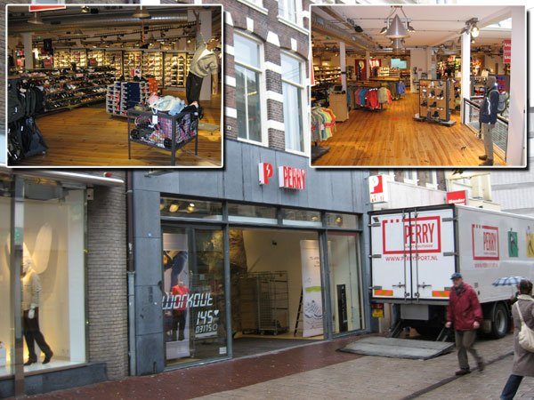
Huidig filiaal van
Perry Sport aan de Grote Houtstraat
VREEBURG 4
(tegenwoordig Vredenburg): Huidig adres van Perry Sport.
Het Perry filiaal te Utrecht lag in 1938 aan de
Oudegracht 143, maar het feit dat Perry Sport nu aan de
Vredenburg ligt is een aanwijzing dat dit adres al
eerder een rol kan hebben gespeeld in de Perry
geschiedenis. De Oudegracht ligt hemelsbreed zo’n 150
meter van de Vredenburg 4.
NEUDE: geen directe
verklaring maar ligt eveneens op een steenworp afstand
van de Oudegracht en de Vredenburg.
BILTSTRAAT: In die tijd de
belangrijkste winkelstraat van Utrecht.
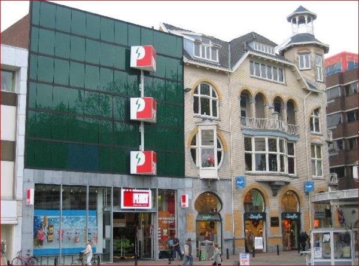
Huidig
Perry filiaal in de Vredenburg te Utrecht
HEERESTRAAT 68:
Perry filiaal Groningen.
GROOTE
MARKT: is wederom van oudsher de
belangrijkste winkelomgeving van Groningen. Vanuit de
Heerestraat komt men direct op de Grote Markt.
A-KERKHOF: ligt,
evenals de Grote Markt op een steenworp afstand van de
Heerestraat.
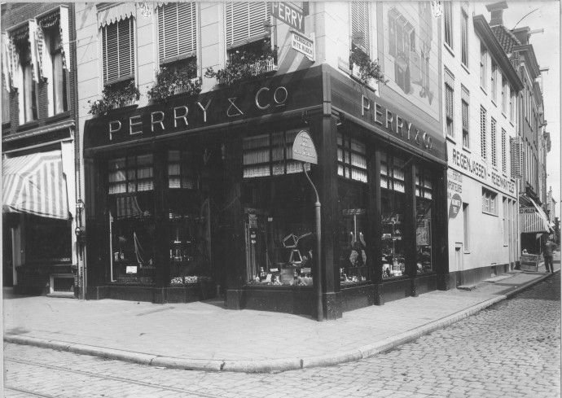
Perry
filiaal in de Heerestraat te Groningen, 1922
PLEIN 13, op de hoek
van de Korte Poten: Perry filiaal Den Haag. Perry had
verder nog vestigingen in de Hoogstraat en de
Valeriusstraat. Het betreft hier opnieuw een belangrijke
winkelstraat.
SPUI en
LANGE POTEN: de
straten Spuistraat, Lange Poten en Plein liggen direct
in elkaars verlengde. Tussen Spuistraat en Lange Poten
kruist Spui deze straten. Het huidig adres Perry Sport
is aan de Spuistraat 63.
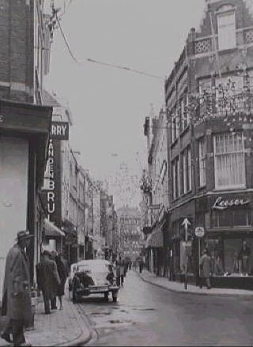
Nog net te zien:
Perry filiaal aan de Hoogstraat, 1961
COOLSINGEL:
Perry had zelf in Rotterdam een vestiging aan de
Schiedamse Singel 67A, die via de Schiedamse Vest en
WestBlaak op de Coolsingel uitkomt maar ook de Bijenkorf
was één van de belangrijkste distributeurs voor Perry
van Monopoly. De Bijenkorf heeft Perry naderhand ook
overgenomen. Het eerste gebouw van de Bijenkorf werd in
1930 geopend en stond aan het van Hogendorpsplein (thans
het Churchillplein), op de hoek met de huidige Blaak en
aan de kop van de Coolsingel. Vanuit de lunchroom kon
men de belangrijke winkelstraat Coolsingel in zijn
geheel overzien.
BLAAK (Plan C):
Perry Magazijn H.F.B. Weimar, magazijn van Perry-artikelen
te Rotterdam.
Het gebouw Plan C lag tussen de Oudehaven en Blaak en is
in de tweede wereldoorlog platgebombardeerd.
HOFPLEIN: dit
verkeersplein ligt aan de andere kop van de Coolsingel.
Vanuit de Bijenkorf kon men deze zien liggen.
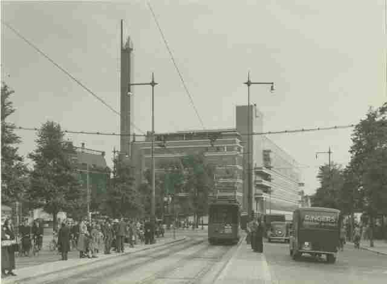
Zicht vanuit de
Coolsingel op het Van Hogendorpsplein met het warenhuis
de Bijenkorf
op de hoek met Blaak (links) en de
Schiedamsedijk (rechts), 1935
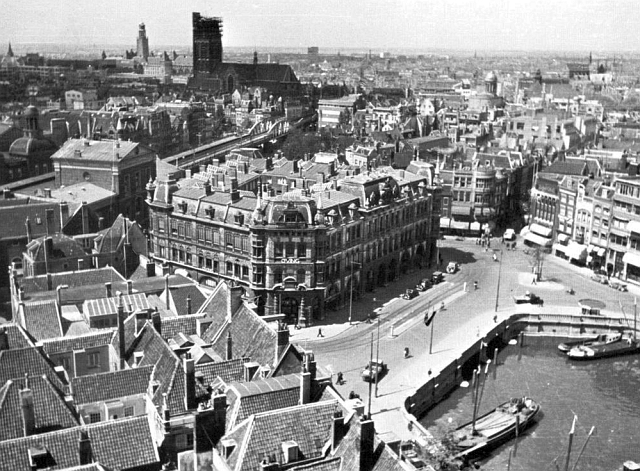
Het gebouw Plan C aan Blaak met daarin het
Perry magazijn
LEIDSCHESTRAAT
is tegenwoordig de Leidsestraat en deze ligt in het
verlengde van het Leidseplein waar de firma Van
Perlstein & Roeper Bosch N.V. (v.P&R.B.N.V.) gevestigd
was te Amsterdam. Deze was de de officiële
licentiehouder van de eerste Nederlandse Monopoly
versies.
KALVERSTRAAT 93-99:
hoofdvestiging van Perry te Amsterdam hetgeen natuurlijk
ook meteen verklaart waarom dit op het Monopolybord de
duurste straat is.
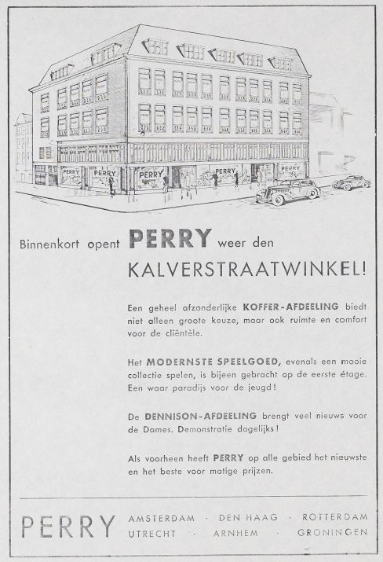
Perry folder 1937.
Heropening na de grote brand in 1936.
De straten DORPSTRAAT
en
BRINK zijn vrijwel zeker
nergens in het bijzonder aan gerelateerd.
BRINK is een algemene term
voor een open plaats of marktplaats.
|
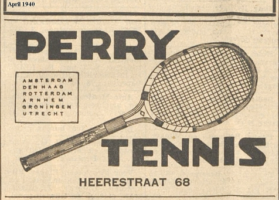
Deze advertentie uit 1940 geeft
de plaatsnamen weer
waar Perry vestigingen had in dat jaar. Haarlem (Barteljorisstraat) staat
niet
in het lijstje omdat daar een magazijn lag en geen winkel. |
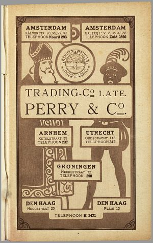
Perry St. Nicolaas folder 1919 |
|
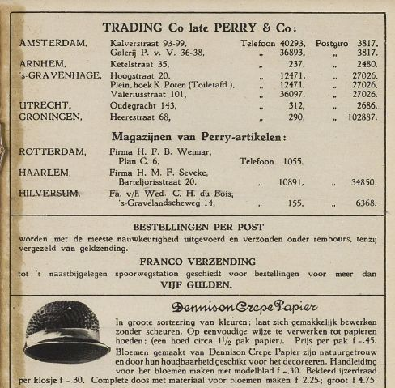
Perry St. Nicolaas folder 1925
|
Bronnen:
- Perry Bode 1911
- Telefoongids 1915
- St Nicolaas folders van Perry uit 1919, 1925, 1936 en
1938
- Huidige adresgegevens Perry Sport
- Albert Veldhuis:
Monopoly Lexicon
- Aad Engelfriet:
Geschiedenis van de Coolsingel
|